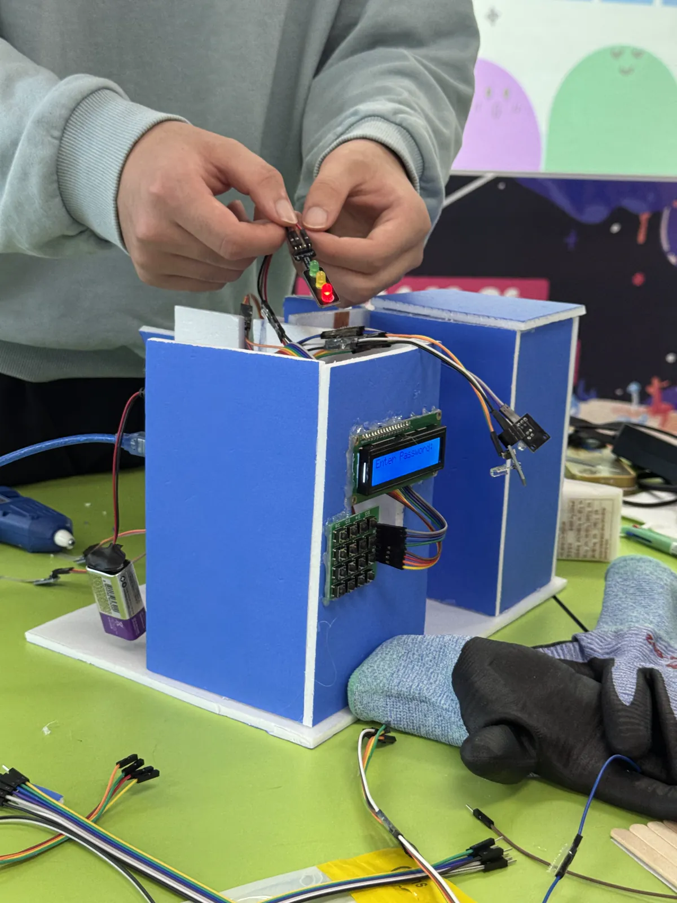
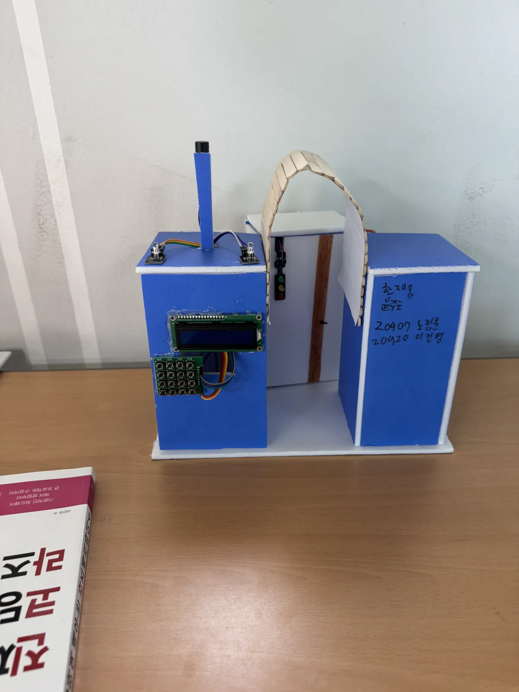
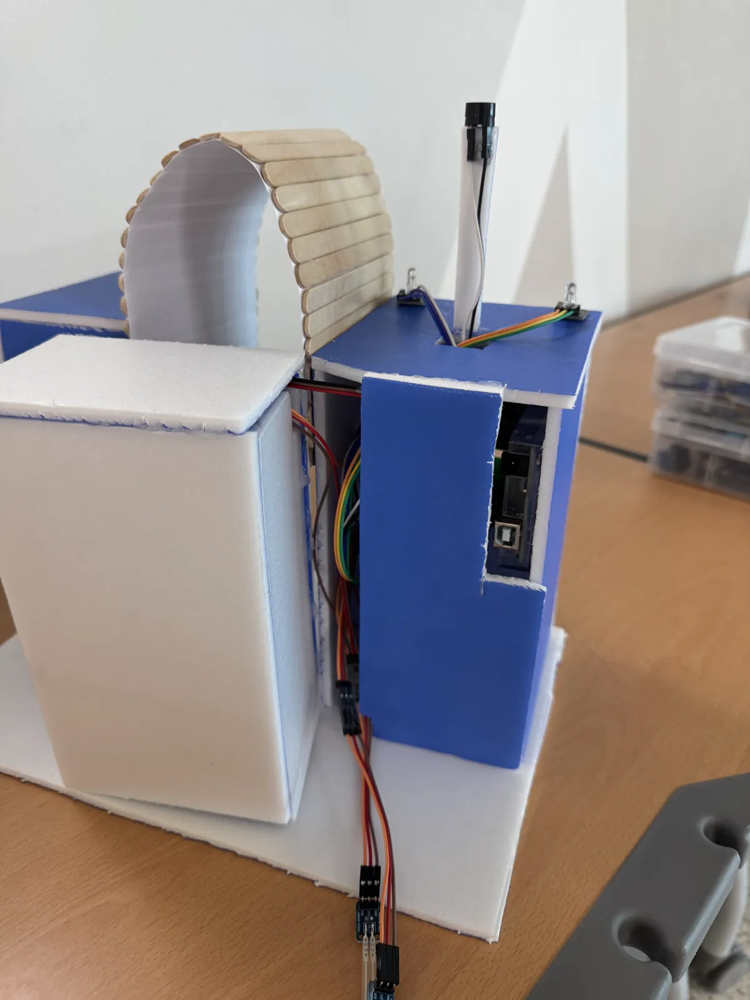
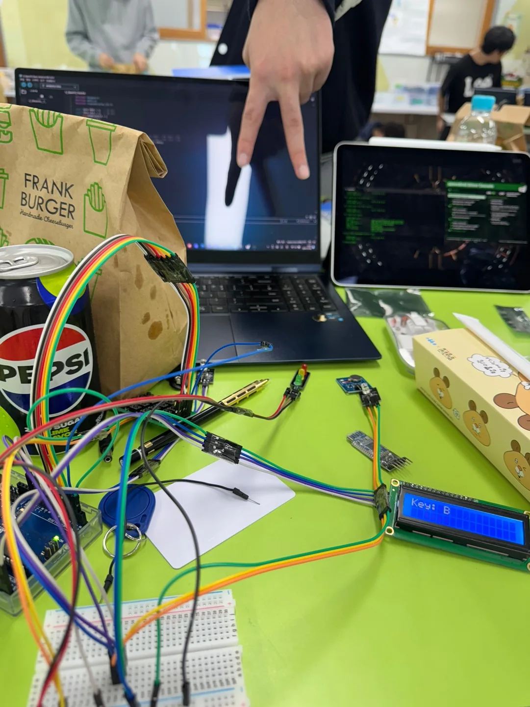
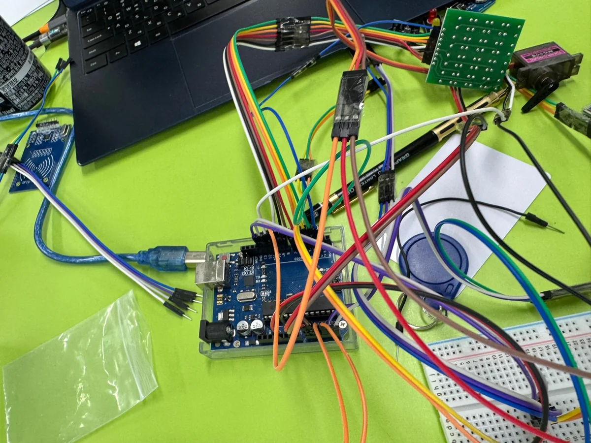

프로젝트 개요
2024 마스터 크리에이터 챌린지 참가 프로젝트로, 아두이노를 기반으로 제작한 비밀번호 도어락 시스템입니다. 4x4 매트릭스 키패드를 이용해 보안 잠금 장치를 구현했습니다.
주요 기능 / 내용
- 4자리 비밀번호 입력 시스템 구현
- 키패드 인터페이스 설계
- 맞는 비밀번호 입력 시 서보모터로 잠금 해제
- 틀린 비밀번호 3회 입력 시 경보음 출력
- LCD 디스플레이로 상태 표시
프로젝트 사진





나의 역할
팀장 · 4인 팀
- 기획
- 아두이노 프로그래밍
- 아두이노 배선
- 발표
- 그 외 다수